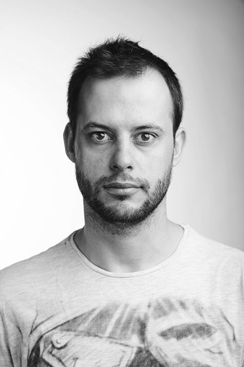

My awesome blog
Home
Christian de Barrio Arribas
@christian

Year
Company
Position
2001-20014
Antena 3 (Grupo Atresmedia)
TV & Graphics Director
2006-2012
ANIMATstudio
Co Founder
2011-2014
That's Art
Director & Videographer
My favorite meals are:
Sushi
Meat
Paella
Pizza
Pasta
My top 10 favorite movies and series
The wire
Game of Thrones
Breaking Bad
Schindler's List
Pulp Fiction
Intouchables
Halt and Catch Fire
Californication
Homeland
Moulin Rouge